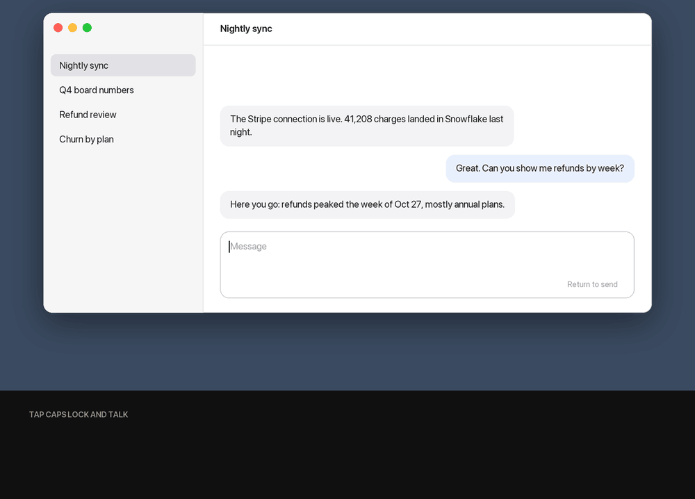

Talk instead of type.
Free, and it never leaves your Mac.
Tap a key, say what you mean, tap again. LocalFlow pastes clean text wherever you're typing, with the "ums" and false starts gone. It's built for writing prompts to your AI agents, and it works in any app.

Why it's different
Fully offline
Whisper transcribes and Qwen 2.5 7B cleans up, both on your Mac. No account, no cloud, no tracking.
About a second
A typical sentence goes from your last tap to pasted, cleaned-up text in about a second on an M-series Mac.
Cleans, never answers
Ask it a question or a coding task and you get the question back, tidied up, ready to send to your agent.
Free and open source
MIT licensed. Read every line, change anything, build it yourself.
First open
LocalFlow isn't signed with an Apple Developer ID yet, so macOS asks you to confirm it once.
- Open the downloaded
LocalFlow.dmgand drag LocalFlow into Applications. - Open LocalFlow. When macOS says it can't verify the developer, click Done.
- Go to System Settings > Privacy & Security, scroll down and click Open Anyway next to LocalFlow.
- In the LocalFlow window, click Download, allow the Microphone, Accessibility and Input Monitoring, and pick your key.
Downloads
| Version | Released | Downloads |
|---|
Counted from GitHub release downloads. LocalFlow itself sends nothing anywhere, so this counts downloads, not people using it.